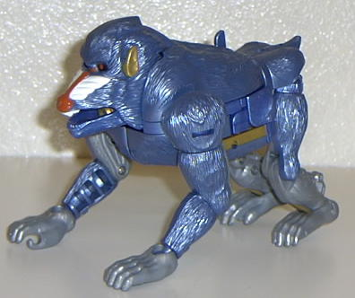
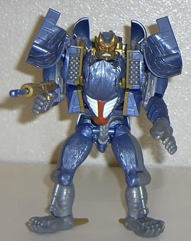

BBoom
BBoom


Allegiance
: Maximal
Size
: Mega
Difficulty of Transformation
: Medium
Color Scheme
: Light Blue and grey
with some gold, white and red
Rating
: 7.6
Beast mode is a baboon,
and it looks pretty cool, with almost no extras at all. The only hint hes
a robot comes from his half-gray back legs. Also, this is the only robot
who can move his forehead and eyes up and down in beast mode. His articulation
is not limited at all, as all of his legs can move at three joints.
Battle mode (not pictured
above) looks very weak. He has a cool head in this mode and a lot of weapons,
but he looks like a hunched-over-backwards monkey.
Robot mode is the best
of all three modes, in my opinion. He looks like a battle-hardened general,
with missle racks on his shoulders and almost no extras. He has a long
gun too, which can fire a missle. His feet look very odd, though, as they
are his baboon back feet turned upside down.
A very cool mega Beast
Warrior, one definitely worth buying.
B'Boom Bio
:
FUNCTION:
Guerilla Warfare Specialist
A guerilla warfare tactical expert,
B'Boom is one of the fiercest and most unpredictable of the Maximals. Though
hard to control and often driven by a temporary fury that sends him speeding
up and down trees, his focus while in battle is easily apparent by the
savage fire in his eyes. Dexterous, brave, and clever, B'Boom is fiercest
while in mega artillery attack mode, a state in which his arsenal is as
fully loaded and function as a battle emplacement. His favorite weapon,
a launcher hidden within his mouth, deploys pulse missiles that detonate
but do not burn - leaving his best weapon, the wilderness, unharmed.
Strength: 8.0
Intelligence: 7.0
Speed: 6.0
Endurance: 7.0
Rank: 7.0
Courage: 9.0
Firepower: 9.0
Skill: 6.0
Reviews by Beastbot
Back to Beast
Wars Toys Index